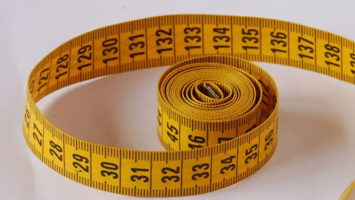
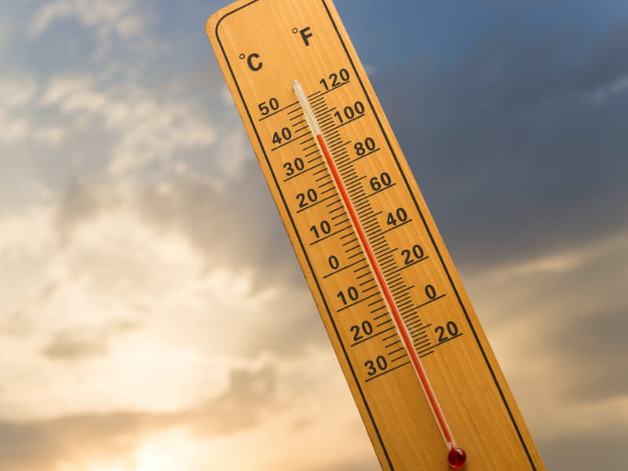

HOME | THE CONVERSION PAGE | THE CONVERSION CALCULATOR
| Currency Conversion | Imagine a global marketplace where currencies converse. The Currency Conversion feature equips you with the ability to navigate seamlessly through the world of international finance. Uncover the mysteries of exchange rates and witness the transformation of values across borders. |
|  Measurement Conversion | In the universe of Measurement Conversion, distances shrink, weights balance, and volumes harmonize. Whether you're planning a trip, cooking up a storm in the kitchen, or crafting, this tool is your compass through the diverse landscape of units. From miles to kilometers, pounds to kilograms, and cups to liters, the possibilities are endless. |
|  Temperature Conversion | Temperature conversion refers to the process of converting a temperature measurement from one unit of temperature scale to another. The three most commonly used temperature scales are Fahrenheit (°F), Celsius (°C), and Kelvin (K). Each scale has its own zero point and unit intervals, making conversions between them essential in various scientific, industrial, and everyday contexts. |
Happy Converting!